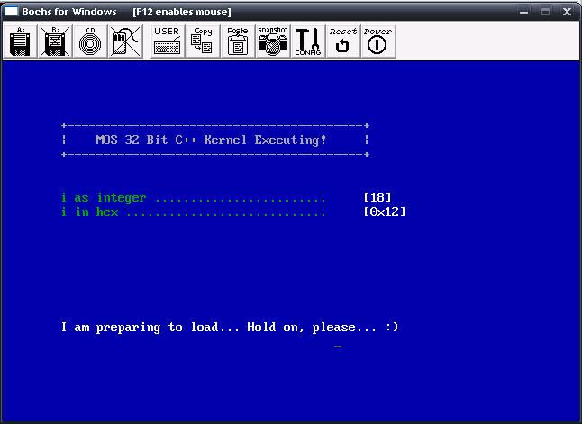

Basic CRT and Code Design
We have also decided that we will be developing a hybrid kernel design for our operating system, as it uses some concepts derived from Microkernels and Monolithic kernel designs. To keep compatibility with C compilers, we will be using C instead of C++. However, I might be developing C++ versions of the source as I personally prefer C++ over C 😀
So, here's what is on the list:
- Promoting Good Coding Practices
- Code Design and Layout
- Abstracting data types and basic declarations
- CRT: _null.h
- CRT: size_t.h
- CRT: ctype.h and cctype
- CRT: va_list.h and stdarg.h/csdtarg
- Demo: Writing Debug Printf (Will be uploaded soon)
...That's it! This tutorial only covers the basic setup of the HAL and Kernel.
Lets start!
Before we Begin
This is our first step away from the bootloader world. Within our bootloader, we did not need to worry much about portability nor system dependency. After all, the bootloader - by its very nature - is very system dependent.
This is the beginning of our own runtime library, and Hardware Abstraction Layer (HAL). Operating Systems can get very large in size. Because we do not know how large this system will be, we need to stress good coding practices from the start. Many development projects fail. It is not because it is to complex, however. Any project can be made with less complexity if designed right. This is what I want to look at next...
Pandora's Boxes
The truth is, simply put, code is evil. Code can get very disorderly and ugly. It is this that adds on more complexity do to the chaotic and recursive nature of code and design. don't get me wrong, we will still need to rewrite a lot of code. The reason for this is because there is no right design.
How do we stop this from happening?
As long as the code is contained within a nice little box, it does not matter how disorderly or ugly the code gets on the inside. That is, Encapsulation, and the bases for nearly all of software engineering.
Encapsulation is a very important concept in software engineering. Even if you are not an Object Oriented Programmer, the concept of encapsulation is still there.
Interface and implementation
The interface ("public") part of the box is the connection from that box to the outside world. It is what connects our box to other boxes within this subsystem. The interface itself contains all of the function prototypes, structures, classes, and other definitions that the box exposes to the outside world so the outside world can use and interact with the box. This is the Interface. All of the evil code that dwells within this box that define the module, all of its functions, class routines, etc. is the modules implementation.
In C, we can insure routines stay as part of the implementation by using the static keyword. Interfaces can be made by using the extern keyword. Within C++, It is encouraged to use classes, with the private, public, and protected keywords.
Get Ready
We will be using the above concepts with developing our system to promote good programming practices with large scale software.
Because portability between compilers is a concern, we will be developing the system using the C programming language. Please keep in mind, however, that you may use C++ if you prefer.
Our primary focus is that of expandability and portability. Because of this, we will be hiding all hardware dependent implementations behind its own little box - The Hardware Abstraction Layer (HAL). Because the C++ startup runtime code it compiler dependent, we will put that in its own little box - The CRT (C++ Runtime) Library. All of this will be completely independent of the rest of the system.
With all of this in mind, lets take the first step into our system...
Code Layout and Design
This tutorial contains our most complex demo so far. Because of this, I would like our readers to open up the demo source, and follow along with the tutorial for better understanding of everything.
Code Design
It is very important to understand why we have chosen this structure for this series. The primary reason is that of encapsulation, where each directory contains a separate library module. That is, Each of these modules is a Pandora's box. It is extremely important to keep these modules as separate as possible in order to maintain code stability, structure, and portability. In order to do this, I have decided to treat each module as independent library modules.
SysBoot\
Stage1\ - Stage1 bootstrap loader
Stage2\ - Stage2 KRNLDR bootloader
Our System Core
=======================================
SysCore\
Debug\ - Pre-Release complete builds
Release\ - Release builds
Include\ - Standard Library Include directory
Lib\ - Standard Library Runtime. Outputs Crtlib.lib or Crtlib.dll.
Hal\ - Hardware Abstraction Layer. Outputs Hal.lib or Hal.dll.
Kernel\ - Kernel Program. Outputs Krnl32.lib or KRNL32.EXE
The only thing that does not need to be built as a library module are the files within the Include/ Directory. As they are only header files, they should never have the need to contain implementations. Because of this, there is no box to open.
As with applications, I have decided to make the C++ runtime code the first code to be executed. In other words, the bootloader does NOT execute the kernel. Instead, it executes the runtime code (CRTLIB), which sets up the environment for the kernel, and then executes the kernel.
_null.h
Its time to start getting down to the nitty gritty of the tutorial!
About C++ includes
If you are using C++, you might be interested about the library header files. That is, in C++, the appended *.h is dropped, and a c is prepended to all C headers. So, instead of #include <stdlib.h>, C++ uses #include <cstdlib> We would like to encourage creating an interface compatible with both languages. However, you might be wondering how do we do that?
Its very simple, actually. In all compilers standard include/ directory, you will see different variants of the same file. i.e., you will see stdlib.h and cstdlib. cstdlib is simply a header file that #includes stdlib.h and no more. We will be doing the same with our library.
This will allow the developers using C to use stdlib.h, while our C++ developers can still use cstdlib. This way we can both encourage good habits.
Back on topic
The first abstraction I would like to look at is NULL. There really is not that much to say here. However, there is one small detail: The way NULL is defined depends on whether you are using C or C++.
Within standard C, NULL is defined as (void)0. Within C++, it is simply 0.* We can determine this by using the fairly standard __cplusplus predefined constant:
// Undefines NULL
#ifdef NULL
# undef NULL
#endif
#ifdef __cplusplus
extern "C"
{
#endif
/* standard NULL declaration */
#define NULL 0
#ifdef __cplusplus
}
#else
/* standard NULL declaration */
#define NULL (void*)0
#endif
There is more in this header do to the template, but this is the important part. Everything else is quite easy.
size_t.h
About Data Hiding
Remember the Pandora's Box theory. The data types within a box are on implementation detail. Some data types are okay, however some or better kept within the implementation. size_t is one of them. By keeping the implementation details, we can modify anything we like about the data type, without effecting anything that uses that type, so long as we remain backward compatible.
Back onto topic
There isn't much to say about this one...
#ifdef __cplusplus
extern "C"
{
#endif
/* standard size_t type */
typedef unsigned size_t;
#ifdef __cplusplus
}
#endif
Data Type Hiding - stdint.h and cstdint
Within the previous section, we were encouraging the importance of data hiding within an interface, However, we did not stress the importance of it with relation to portability.
Each data type has a specified size to them. However, the size of each data type completely depends on the compiler and system this is being built for. Because of this, it is important to hide the data types behind a standard interface, specifically because we are working in an environment where Size Does Matter(tm).
stdint.h
This is a fairly big file at about 150 lines. None of it is very hard, however. It defines different integral data types that are guaranteed to be a certain size.
Lets look at the fundamental types, as we will be using them throughout the system:
typedef signed char int8_t;
typedef unsigned char uint8_t;
typedef short int16_t;
typedef unsigned short uint16_t;
typedef int int32_t;
typedef unsigned uint32_t;
typedef long long int64_t;
typedef unsigned long long uint64_t;
When compiling for a 32bit system, the above data types are guaranteed to be the same. That is, uint8_t is guaranteed to be 8 bits. uint16_t is guaranteed to be the size of a WORD (2 bytes), and so on. The size of the data type is encoded in its name, so we will always know its size.
There is a lot more code in this file, but most of it is fairly easy.
The file cstdint simply #includes stdint.h. This allows us to include these declarations in two ways:
#include <stdint.h// C
#include <cstdint // C++ only
Please see About C++ includes... section for more information of why we have done this.
ctype.h and cctype
ctype.h is a set of macros that help determine what type of character in a string is. It does this by following the different properties of the standard ASCII Character Set. You can get it from asciitable.com
This header file includes several macros and constants:
extern char _ctype[];
#define CT_UP 0x01 /* upper case */
#define CT_LOW 0x02 /* lower case */
#define CT_DIG 0x04 /* digit */
#define CT_CTL 0x08 /* control */
#define CT_PUN 0x10 /* punctuation */
#define CT_WHT 0x20 /* white space (space/cr/lf/tab) */
#define CT_HEX 0x40 /* hex digit */
#define CT_SP 0x80 /* hard space (0x20) */
#define isalnum(c) ((_ctype + 1)[(unsigned)(c)] & (CT_UP | CT_LOW | CT_DIG))
#define isalpha(c) ((_ctype + 1)[(unsigned)(c)] & (CT_UP | CT_LOW))
#define iscntrl(c) ((_ctype + 1)[(unsigned)(c)] & (CT_CTL))
#define isdigit(c) ((_ctype + 1)[(unsigned)(c)] & (CT_DIG))
#define isgraph(c) ((_ctype + 1)[(unsigned)(c)] & (CT_PUN | CT_UP | CT_LOW | CT_DIG))
#define islower(c) ((_ctype + 1)[(unsigned)(c)] & (CT_LOW))
#define isprint(c) ((_ctype + 1)[(unsigned)(c)] & (CT_PUN | CT_UP | CT_LOW | CT_DIG | CT_SP))
#define ispunct(c) ((_ctype + 1)[(unsigned)(c)] & (CT_PUN))
#define isspace(c) ((_ctype + 1)[(unsigned)(c)] & (CT_WHT))
#define isupper(c) ((_ctype + 1)[(unsigned)(c)] & (CT_UP))
#define isxdigit(c) ((_ctype + 1)[(unsigned)(c)] & (CT_DIG | CT_HEX))
#define isascii(c) ((unsigned)(c) <= 0x7F)
#define toascii(c) ((unsigned)(c) & 0x7F)
#define tolower(c) (isupper(c) ? c + 'a' - 'A' : c)
#define toupper(c) (islower(c) ? c + 'A' - 'a' : c)
Pretty simple stuff so far. The above macros may be used to determine and modify individual characters.
For C++, There is also cctype that may be used instead of ctype.h.
va_list.h and stdarg
These are standard headers containing macros for accessing unnamed parameters whithin a variable argument list.
va_list.h
va_list.h abstracts the data type used for variable length parameter lists.
/* va list parameter list */
typedef unsigned char *va_list;
stdarg.h and cstdarg
This is our final basic library include file that we will look at. It defines some nice macros that we may use for C and C++ variable length parameter lists.
These macros are fairly tricky, so lets look at them one at a time.
VA_SIZE
/* width of stack == width of int */
#define STACKITEM int
/* round up width of objects pushed on stack. The expression before the
& ensures that we get 0 for objects of size 0. */
#define VA_SIZE(TYPE) \
((sizeof(TYPE) + sizeof(STACKITEM) - 1) \
& ~(sizeof(STACKITEM) - 1))
This is a little tricky. VA_SIZE returns the size of the parameters pushed on the stack. Remember that C and C++ uses the stack to pass parameters to routines. On 32bit machines, each stack item is normally 32 bits.
va_start
/* &(LASTARG) points to the LEFTMOST argument of the function call
(before the ...) */
#define va_start(AP, LASTARG) \
(AP=((va_list)&(LASTARG) + VA_SIZE(LASTARG)))
The standard va_start macro takes two parameters. AP is a pointer to the parameter list (of type va_list), and LASTARG, which is the last parameter in the parameter list (The parameter right before the ...).
All this routine does is get the address of the last parameter, and adds the size of the parameter size to that address. If the stack size is 32, then all it does it add 32 to the last parameters address on the stack, which is where the first parameter in the parameter list is at.
va_end
/* nothing for va_end */
#define va_end(AP)
There isnt much to do here.
va_arg
#define va_arg(AP, TYPE) \
(AP += VA_SIZE(TYPE), *((TYPE *)(AP - VA_SIZE(TYPE))))
This is a little tricky. va_arg() returns the next parameter in the parameter list. AP should contain the pointer to the parameter list that we are working with. TYPE contains the data type (int, char, etc.)
All we need to do is add the number of bytes of the data type (TYPE) to the variable parameter list pointer (AP). This insures the variable parameter list pointer now points to the next parameter in the list.
After this, we dereference that data that we have just passed (by incrementing the pointers location) and return that data.
Demo

This demo is fairly complex. I wanted to provide some basic C++ library routines, as well as a way to provide displaying text for debugging purposes. With this, all of the project files include the libraries for the Hardware Abstraction Layer (HAL), Kernel, and C++ Library code. In other words...It looks more complex then it actually is 😀
Demo Download (MSVC++)
Conclusion
Now that the basic necessities are taken care of, in the next tutorial we will start building the actual Kernel and Hardware Abstraction Layer (HAL). We will cover error and exception handling theory and concepts, interrupt handling, the Interrupt Descriptor Table (IDT), and how to trap processor exceptions so it will no longer triple fault. We can also build our own super 1337 BSoD too 😉